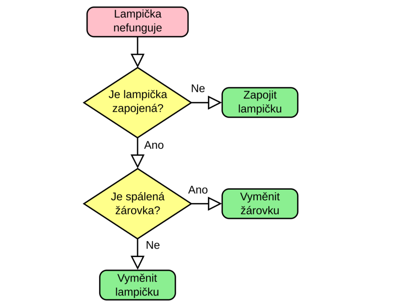
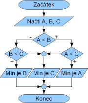
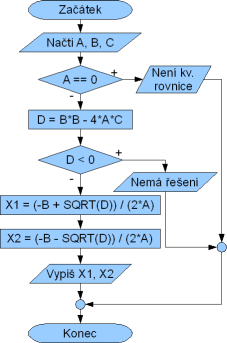
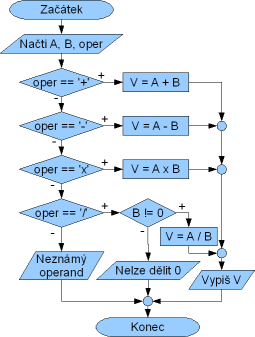

1 × 45 min Teória a Python

| Čas | Časť hodiny | Pracovný zámer |
|---|---|---|
| 0–5 min | Opakovanie | Rozvetviť známu úlohu s jednou podmienkou. |
| 5–13 min | Potreba ďalšieho rozhodnutia | Vysvetliť, že druhé rozhodnutie závisí od výsledku prvého. |
| 13–23 min | Strom možností | Usporiadať podmienky a koncové výsledky do prehľadnej štruktúry. |
| 23–37 min | Riadená aktivita | Prejsť všetky vetvy a overiť ich na hraničných prípadoch. |
| 37–45 min | Samostatná kontrola | Navrhnúť vlastnú viacúrovňovú voľbu a zdôvodniť poradie. |
Žiak vysvetlí, čo je vnorená podmienka a kedy je druhé rozhodnutie závislé od prvého, správne odsádza bloky if/elif/else, trasuje vnorený program a rozhodne, či je vhodnejšie vnorenie alebo spojenie podmienok pomocou and.
Vnorená podmienka je podmienka zapísaná vo vnútri bloku inej podmienky. Program najprv vyhodnotí vonkajšiu podmienku. K vnorenému rozhodnutiu sa dostane iba vtedy, keď vykoná príslušný vonkajší blok. Vnorenie preto vyjadruje hierarchiu: najprv over A, a len ak A platí, rozhoduj podľa B.
Napríklad pri kontrole prístupu sa najprv overí, či je používateľ prihlásený. Až prihlásenému používateľovi má zmysel kontrolovať, či má oprávnenie na konkrétnu činnosť. Ak prvá podmienka neplatí, druhý test sa vôbec nevykoná.
Každá úroveň vnorenia pridáva ďalšie odsadenie. V Pythone odsadenie nie je len vizuálne formátovanie – určuje, ktoré príkazy patria do ktorého bloku.
if vonkajsia_podmienka:
# Vonkajší blok: 4 medzery
if vnorena_podmienka:
# Vnorený blok: 8 medzier
print("Obe podmienky platia.")
else:
# Toto else patrí vnorenému if
print("Platí iba vonkajšia podmienka.")
else:
# Toto else patrí vonkajšiemu if
print("Vonkajšia podmienka neplatí.")else alebo elif musí byť zarovnané s príslušným if.else patrí k najbližšiemu predchádzajúcemu if na rovnakej úrovni odsadenia, ku ktorému ešte nebolo priradené.V tomto príklade známky sú v rozsahu 1–5. Najprv sa rozlíši známka. Dochádzka sa kontroluje iba pri známke 1 alebo 2.
# Vstupy príkladu
znamka = 2
dochadzka = 85 # percentá
if znamka <= 2:
# Sem patrí známka 1 alebo 2
if dochadzka >= 80:
print("Študent dostane pochvalu.")
else:
print("Študent má dobrú známku, ale slabú dochádzku.")
elif znamka == 3:
print("Študent prešiel s priemerným výsledkom.")
else:
# Pri predpoklade známok 1 až 5 sem patria 4 a 5
print("Študent neprešiel.")Pri hodnotách znamka = 2 a dochadzka = 85 platí vonkajšie porovnanie znamka <= 2. Program potom vyhodnotí vnorené dochadzka >= 80, ktoré je tiež pravdivé, a vypíše pochvalu. Ak by dochádzka bola 70 %, vykonala by sa vnorená vetva else. Pre známku 3 sa vnorený test vôbec nevykonáva.
else v tomto príklade znamená známky 4 alebo 5 len preto, že predpokladáme platný rozsah 1–5. Ak používateľ zadáva údaje, treba osobitne overiť, že známka aj percentá dochádzky sú v povolenom rozsahu.Vnorené podmienky možno čítať ako strom: každá odpoveď rozvetví postup a ďalší test sa nachádza len v tej vetve, v ktorej je potrebný. Pri návrhu si vypíš možné výsledky, označ, ktoré podmienky sa týkajú každej vetvy, a skontroluj, že všetky prípady majú jasný koniec.



Trasovanie znamená prejsť kód príkaz po príkaze a zaznamenať, ktoré podmienky sú pravdivé a ktoré riadky sa vykonajú. Pozor: else patrí k vonkajšiemu alebo vnorenému if podľa svojho odsadenia.
vek = 16
ma_skusenosti = True
if vek >= 18:
print("1")
if ma_skusenosti:
print("2")
else:
print("3")
if ma_skusenosti:
print("4")Priebeh: vek >= 18 je nepravdivé, preto sa vykoná jeho vonkajšie else. Vypíše sa 3. V tomto bloku je ma_skusenosti pravdivé, preto sa vypíše aj 4. Správna odpoveď je c) 3 potom 4.
Vnorenie je vhodné, keď druhá podmienka závisí od prvej, keď treba podať odlišnú spätnú väzbu pre jednotlivé dôvody alebo keď sa po prvej kontrole vykonáva väčší samostatný blok. Ak majú obe podmienky viesť k rovnakej činnosti, môžu byť prehľadnejšie spojené operátorom and.
vek = 18
ma_skusenosti = True
if vek >= 18 and ma_skusenosti:
print("Osoba spĺňa obe kritériá.")
else:
print("Osoba nespĺňa aspoň jedno kritérium.")V Pythone je operátor „a zároveň“ zapísaný malými písmenami and. Zápis vek = 18 je priradenie, preto ním nemožno testovať podmienku; na porovnanie použijeme napríklad vek >= 18 alebo vek == 18. Pri použití and Python vyhodnocuje výrazy zľava doprava a môže skončiť hneď, keď už pozná výsledok celého výrazu (skrátené vyhodnocovanie).
if A: a až v jeho bloku if B: – B testujeme len v prípade, že A platí, prípadne potrebujeme rozdielne kroky.if A and B: – jediný blok sa vykoná iba vtedy, keď platia obe podmienky.else patrí k najbližšiemu nezodpovedanému if s rovnakým odsadením.vek = 18 ako podmienku; priraďovanie a porovnávanie sú odlišné operácie.if patrí každé else v príklade s vekom a vysvetli, prečo sa vypíšu 3 a 4.b == 0 vykonáva iba vo vetve delenia.and na vnorené if. Porovnaj, či výsledné správy poskytujú rovnako podrobnú spätnú väzbu.if patrí vonkajšie else. Pri príklade so známkou zdôraznite predpoklad povoleného rozsahu 1–5. Neprehĺbte tému za dve až tri úrovne; cieľom je správne vysvetliť závislosť podmienok, odsadenie a väzbu else. Časový plán je návrh na jednu 45-minútovú hodinu.